AI × EMS
AI 在醫療指導的應用
一位急診醫師的實作分享
黃碩焜 新竹台大醫院 急診醫學部
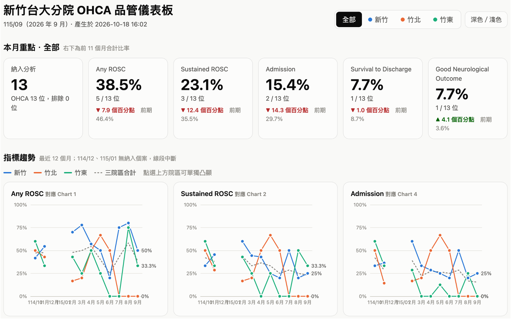
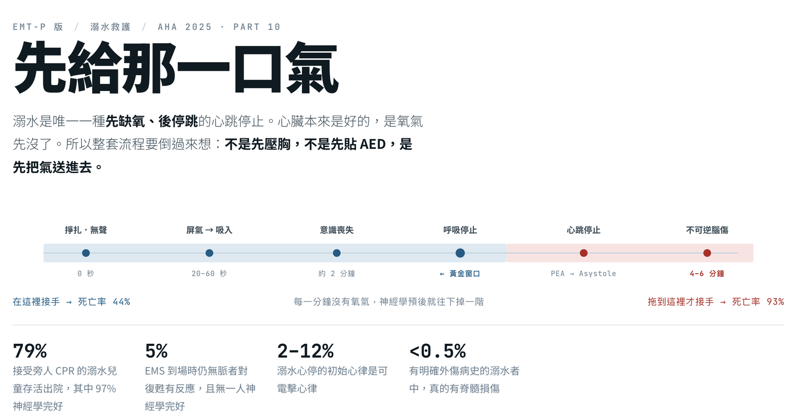
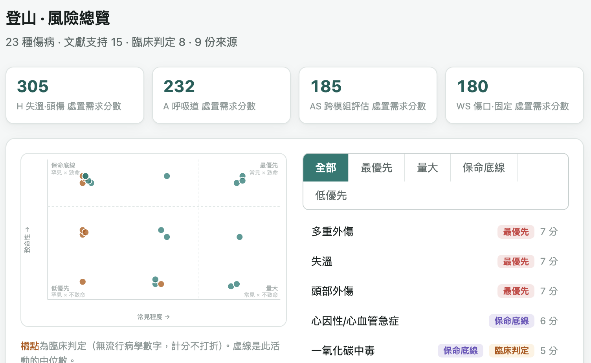
01
AI 在醫療指導的應用
這場分享談 AI 怎麼走進到院前救護的醫療指導：先看我自己動手做的工具，再看國際研究走到哪裡，最後談落地會遇到的困難。
一位急診醫師的實作分享 黃碩焜 新竹台大醫院 急診醫學部
AI × EMS
AI 在醫療指導的應用
一位急診醫師的實作分享
黃碩焜 新竹台大醫院 急診醫學部



這場分享談 AI 怎麼走進到院前救護的醫療指導：先看我自己動手做的工具，再看國際研究走到哪裡，最後談落地會遇到的困難。
AI × EMS
醫療指導的四個面向
醫療指導
1
醫療執行與
線上醫療指導
2
數據及
品管監測
3
政策與
醫療流程制定
4
教育訓練
在每一個段落都有 AI 可以操作的地方。
醫療指導醫師有四個面向：醫療執行與線上醫療指導、數據及品管監測、政策與流程制定、教育訓練。後面的案例和研究，分別落在這四個面向。
AI × EMS
從「會回答」到「會動手」
2022
ChatGPT 3.5 發布
對話式 AI：問答、寫文字、整理資料
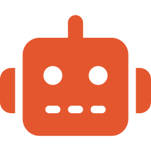
現在
AI Agent
直接操作電腦、寫程式，
自己動手把事情做完
3
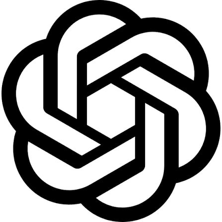
ChatGPT Work
Claude Code
2022 年 ChatGPT 發布後，AI 快速迭代。現在除了對話式 AI，還有能直接操作電腦、動手做事的 AI Agent。
AI × EMS
AI 幫我們簡化的 6 個面向
1
自動寫程式
不會寫程式也能做 App
2
資料處理自動化
公式、圖表、報表一次完成
3
重複瑣事自動化
抓病歷欄位、複製貼上
4
網站分享
知識直接放上網，掃了就看
5
視覺化
互動網頁、教學影片
6
AI 大腦
AI 真正的應用：自動判斷
4
AI 主要在六件事上幫我們簡化工作，接下來一件一件講。
AI × EMS
1
重複瑣事：不會寫程式，也能請 AI 寫
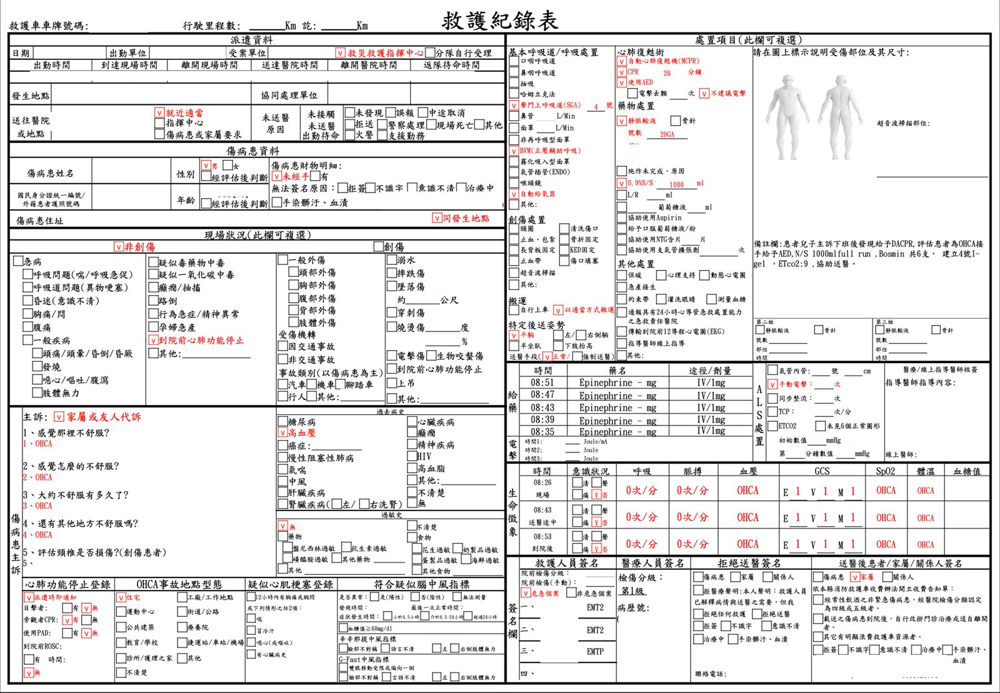
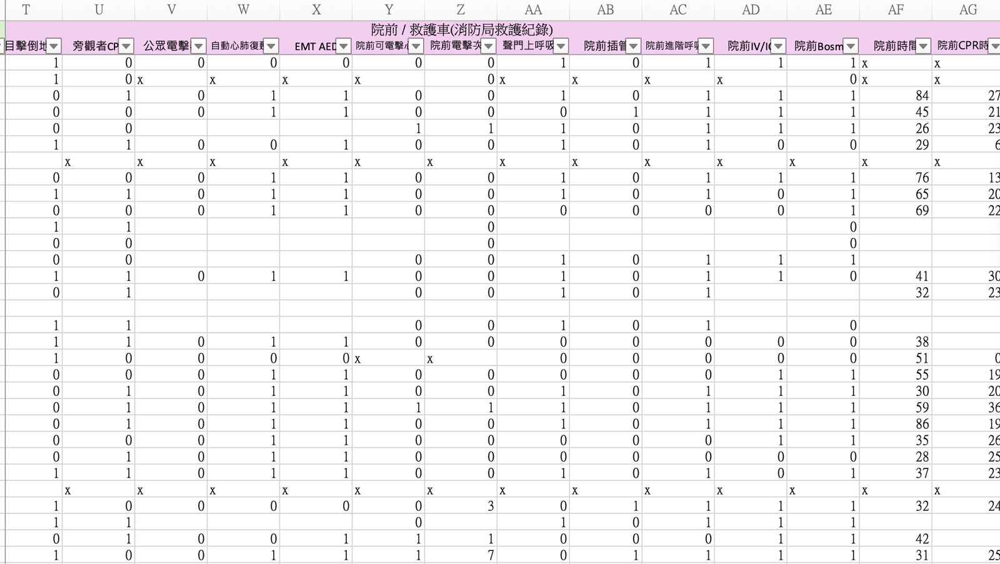
每月逐一看救護紀錄與病歷
再手動填進品管資料庫
過去：要會寫程式才能自動化 → 現在：直接請 AI 寫
5
第一，自動化重複、瑣碎的事。以每月 OHCA 品管為例，過去要逐一看救護紀錄與病歷、再手動填進資料庫；過去這要會寫程式才能自動化，現在直接請 AI 寫。
AI × EMS
2
資料處理：每月品管耗時從 12 小時縮到 2 小時
12 小時
2 小時內
每月 OHCA 品管，交給程式自動處理
手填資料
拉公式
做圖表
做 PPT
即時品管儀表板：報表、PPT 自動生成
6
第二，資料處理。資料庫建好後，過去每月要拉公式、做圖表、做簡報，約 12 小時；現在用 AI 寫的程式兩小時內完成，還能看即時更新的儀表板。
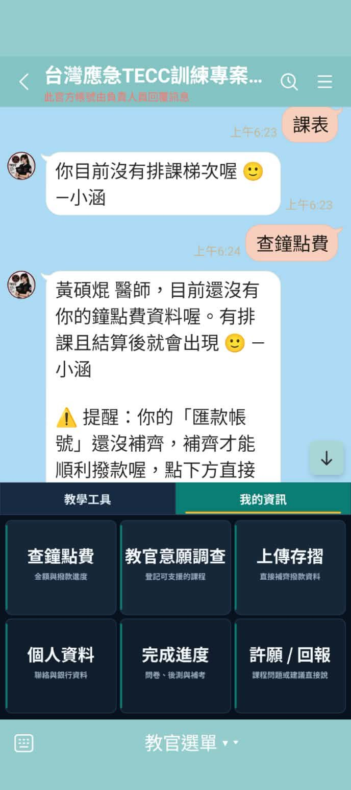
2
聊天 BOT 簡化課程行政
智能助理 – 小涵
用聊天機器人處理課程行政：學員可以在 LINE 上查排課、上傳照片、查鐘點費、開教學文件，減少教官與行政人員來回聯絡。
另一個例子是常訓體能成績管理系統：各單位成績統整、跨年度查詢與合格率追蹤，報表一鍵匯出。
AI × EMS
3
自動寫程式：同一個 App，兩種做法
過去：外包廠商
約 50 萬，再加每年維護費
開發約半年
改一個功能約一週，次數有限
9
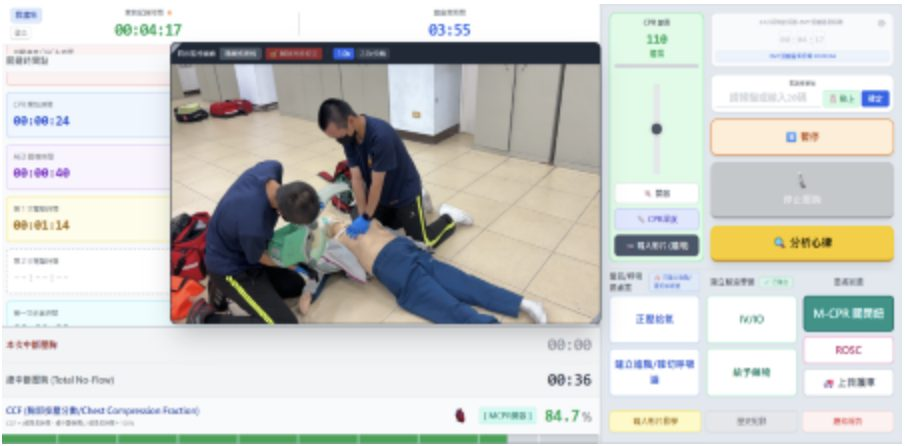
例：臺南市消防局「OHCA-QA 急救品質評估系統」
圖：臺南市政府消防局新聞稿，2026-07-31
第三，自動寫程式。過去做一個 OHCA 輔助 App 要外包給廠商，可能 50 萬加每年維護費、開發半年，改一個功能要來回一週。圖為臺南市消防局 OHCA-QA 急救品質評估系統。
現在相同功能的 App，一兩個晚上就能做出來，一晚可以迭代 30 個版本。CPR 輔助工具把節拍器、給藥、計時紀錄放在同一頁。
AI × EMS
4
自動寫程式： 安妮怎麼了 CPR 教練
11
「安妮怎麼了 CPR 教練」用手機鏡頭看按壓，即時顯示按壓速度、回彈、手臂是否打直，練完給一份練習報告。點影片可以播放。
第四，網站分享。過去知識靠投影片、PDF 傳檔下載；現在用免費的 GitHub 架站，掃 QR Code 就能用，還能做成互動式設計。
TECC 演練用的情境音效台：教官在現場用手機控制，槍聲、爆炸、空襲警報可以疊加播放，打開網頁就能用。
院前救護情境演練系統收錄 817 個情境，依 X-A-B-C-D-E 與病因分類，可篩選、隨機抽題。製作：台南市救護義消陳冠言。
第五，視覺化。用 AI 輔助開發互動式心臟解剖教學網頁，可以旋轉操作 3D 心臟。
AI × EMS
5
視覺化：也能做成教學影片
16
也能用 AI 做教學影片，例如這段 CVVH 體外循環的動畫說明。點影片可以播放。
第六，用 AI 的大腦快速讀指引、輸出教材：把 AHA 2025 Part 10 溺水的內容，整理成給 EMT-P 看的教學網頁。
AI × EMS
AI 大腦 在到院前救護
領域 | 研究 | 設計 | 準確度 | 流程 | 病人結果 |
派遣 OHCA 辨識 | Blomberg 2021 | RCT | 部分 | 沒差 | － |
派車排序 | Spangler 2026 | RCT | 部分 | 部分 | － |
線上醫療指導 ECG | Chen 2022（台灣） | 前瞻、非隨機 | 改善 | 改善 | － |
病歷品管 | Brant-Zawadzki 2025 | 回溯 | 部分 | 沒差 | － |
按指引處置建議 | Wang 2026 | 模擬 | 部分 | － | － |
創傷檢傷 | Lokerman 2023 | 前後比較 | － | 改善 | 部分 |
後送選院 | Kim 2025 | 非隨機介入 | － | 沒差 | 部分 |
改善＝有統計意義的進步 部分＝邊緣顯著、次群組或只在部分指標 沒差＝無差異或變差 －＝沒有測
18
6
預告第二部分：七篇研究放在一起看，準確度多半不錯，但沒有一篇用隨機試驗證明病人結果變好。
AI × EMS
醫療指導的四個面向
醫療指導
1
醫療執行與
線上醫療指導
2
數據及
品管監測
3
政策與
流程制定
4
教育訓練
回到醫療指導的四個面向，接下來的七篇研究分別落在這幾個面向。
第二部分
AI 在到院前救護：證據走到哪裡？
讀研究時，先問它證明到哪一層
準確度
模型和標準答案比，準不準
流程
人用了以後，有沒有更快、更對
病人結果
存活、神經預後、死亡率
約 400 篇文獻中，大多數停在第一層；有病人結果的屈指可數
看 AI 研究先問：它證明到哪一層？第一層是準確度，第二層是流程有沒有變快、變對，第三層才是病人結果。約 400 篇文獻裡，絕大多數停在第一層。
AI × EMS
品管：ChatGPT 審病歷，
可以抓「有沒有做」，但沒辦法抓「何時做」
美國 鹽湖城
回溯性比較
150 份胸痛救護紀錄
證據層級
準確度
流程
病人結果
怎麼做
•150 份胸痛救護紀錄去識別化後上傳
•消費者版 ChatGPT-4、Gemini Ultra，用同一個提示詞
•依 NASEMSO 胸痛／STEMI 品管指標逐項評
•對照：2 位 EMS 醫療主任人工審查
κ 0.401
GPT-4 與醫療主任的一致性；人與人是 κ 0.782
限制 人與人 κ 只來自 20 份；2024 年初模型已過時；審查者未盲化；Gemini 審到 47 份因幻覺停用
對醫療指導的意義 每份審閱 1:24 vs 1:28，沒省時間；LLM 適合當初篩標記，時間性指標仍要醫師
Brant-Zawadzki G, et al. Prehosp Emerg Care 2025;29(3):210–217. PMID 38976859。圖：依原文 Table 3 數據重繪
21
鹽湖城的研究讓 ChatGPT-4 依 NASEMSO 指標審 150 份胸痛紀錄：「有沒有做」這類問題一致性高（κ 0.7–0.8），但「何時做」幾乎猜不準（κ 0.016），審閱時間也沒有比人快。適合當初篩，時間性指標仍要醫師。
AI × EMS
線上醫療指導：台中救護車 AI 判讀 STEMI
台灣 台中／南投
前瞻、非隨機
14 分隊、275 人、362 張 ECG
準確度
流程
病人結果
怎麼做
•胸痛、喘的病人用迷你 12 導程貼片
•上傳中國醫大 AI 中心（CNN-LSTM）
•AI 回「是／不是 STEMI」，醫師再確認
•對照：11 個分隊照舊傳給線上醫師
37 秒 vs 113 秒
AI vs 線上醫師回覆；醫師 ±369 秒、
5% 超過 10 分鐘
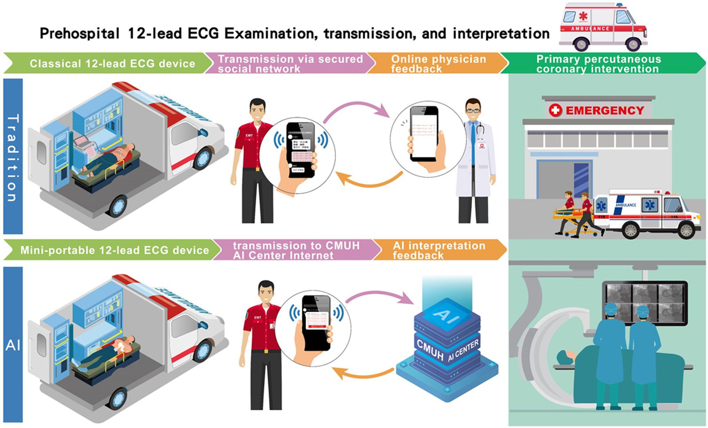
限制 醫師時間來自不同分隊、不同 ECG；AUC 0.997 但真陽性僅 16 張；無病人結果比較；共同作者任職 AI 公司
對醫療指導的意義 AI 能補「等醫師回覆」的空窗；10 位 PPCI 接觸到院 18.5 分。
Chen KW, et al. Front Cardiovasc Med 2022;9:1001982. PMID 36312246。圖：原文 Figure 1（CC BY）
22
台中、南投 14 個消防分隊用迷你 12 導程貼片上傳心電圖，AI 平均 37 秒判讀 STEMI，線上醫師平均 113 秒且變異很大。這是台灣線上醫療指導的真實部署，但沒有病人結果的對照。
AI × EMS
OHCA偵測：AI很會偵測OHCA，但偽陽性太高
丹麥 哥本哈根
隨機對照試驗
AI 標記 5,242 通來電
證據層級
準確度
流程
病人結果
怎麼做
•AI 即時聽 112 電話，每秒估算 OHCA 機率
•超過門檻就在派遣員螢幕跳警示，可以忽略
•被 AI 標記的來電隨機分組：顯示 vs 不顯示
•主要結果：派遣員有沒有辨識出 OHCA
93.1% vs 90.5%
派遣員辨識率（有警示 vs 無），P = .15
限制 事後才註冊；伺服器不足，只有約 75% 電話被 AI 處理；派遣員訓練不足
對醫療指導的意義 介入組若全照 AI，只多抓 22 例，卻多 2,122 次假警報：準確度 ≠ 成效
Blomberg SN, et al. JAMA Netw Open 2021;4(1):e2032320. PMID 33404620（CC BY）
23
哥本哈根的 RCT 讓 AI 即時聽 112 電話辨識 OHCA。AI 比人敏感（85% 對 77.5%），但陽性預測值只有 17.8%，派遣員的辨識率沒有顯著改善。
AI × EMS
把 2,580 頁醫療流程餵給 AI，模擬處置只答對 75%
美國 洛杉磯郡
模擬研究
6 個情境、169 個處置
證據層級
準確度
流程
病人結果
怎麼做
•整本 2,580 頁手冊放進 NotebookLM
•RAG＝開書考：先找段落再答，附出處
•6 情境：成人 3 例、沙林、兒童 2 例
•依協定列 169 個應做處置，2 人評分
9 個重大遺漏
5 個在兒童 PEA，多半沒提醒找可逆病因
限制 每題只問一次、隔天再問答案不同；評分者是作者、未盲化；無救護員實際使用；幻覺 12 次（7 次在沙林）
對醫療指導的意義 還不能放手AI處置；遺漏最危險的兒科與可逆病因，上線前要先用情境測過
Wang CG, …, Toy J. Prehosp Emerg Care 2026. PMID 42096610。圖：依原文 Figure 1 數據重繪
24
洛杉磯郡把 2,580 頁院前照護手冊放進 NotebookLM，在 6 個模擬情境中答對約 75%，有 9 個重大遺漏，多在兒童 PEA。上線前要先用兒科與罕見情境測過。
AI × EMS
派車排序：車不夠時，AI 幫忙決定先救誰
瑞典 2 個派遣中心
隨機對照試驗
1,245 次車少人多情境
證據層級
準確度
流程
病人結果
怎麼做
•2 位以上非緊急病人等 1 台車時啟動
•AI 聽派遣音檔，用 2,367 個變項標出最危急者
•紅／橘色表示把握度；以情境隨機
•主要結果：首台車是否給 NEWS2 最高者
OR 1.28
95% CI 1.00–1.63，P = 0.047，
剛好在邊緣
為什麼不照做 照做率 80.9%；AI 有把握 81.7% vs 沒把握 80.3%，派遣員沒用上把握度訊號。作者沒有訪談原因
對醫療指導的意義 AI 可能判斷的比派遣員更好，建議「AI 有把握就照 AI、沒把握由派遣員判斷」
需釐清派遣員未按照 AI 建議派遣的判斷原因
Spangler DN, et al. PLoS Med 2026;23(3):e1004770. PMID 41915716（CC BY）。提早停止、檢定力不足
25
指標 | 一般做法 | AI 輔助 | 解讀 |
首台車派給最危急者 | 62.5% | 68.3% | OR 1.28，P = 0.047，邊緣顯著 |
綜合結果判斷 | 63.0% | 69.6% | OR 1.31，方向一致 |
進入情境到派車決定 | 202 秒 | 96 秒 | 決定變快（事後分析） |
照 AI 建議派車 | 54.0% | 80.9% | 一般組看不到建議，是巧合一致 |
瑞典 MADLAD 試驗：救護車不夠時由 AI 標出最危急的病人，第一台車派給 NEWS2 最高者的比例從 62.5% 升到 68.3%，效果邊緣（P = 0.047）。
AI × EMS
檢傷：現場檢傷 App，重傷漏送少了 5%
荷蘭 3 個創傷區
導入前後比較
80,738 位成人創傷
證據層級
準確度
流程
病人結果
怎麼做
•救護車平板 App：10 變項預測模型
•輸入年齡、血氧、GCS、機轉、部位
•建議送哪一級醫院，救護員可不照做
•真正用 App 的人很少：
導入後 4 萬多位病人中，App 結果有傳回來的只有 978 例（約 2.4%）。
救護員多半只在「拿不定主意」時才打開。
校正 RR 0.85
重傷漏送（低估檢傷），95% CI 0.76–0.95
限制 前後比較、非隨機；實際上傳 App 僅 978 例，效果可能多來自宣導；
模型是邏輯迴歸，不算機器學習
對醫療指導的意義
過度檢傷沒增加；24 小時死亡 aOR 0.71，但院內死亡無差異。
「給救護員一個決策輔助工具」加上「教育訓練」，確實能減少重傷漏送
但工具要真的被用，得整合進原本的紀錄流程，
Lokerman RD, et al. JAMA Netw Open 2023;6(4):e236805. PMID 37014639（CC BY）
26
荷蘭在救護車放創傷檢傷 App，重傷卻沒送到創傷中心的比例從 31.8% 降到 26.8%，過度檢傷沒有增加。這是前後比較，不是隨機試驗。
AI × EMS
後送：5G＋AI 選醫院，沒人用就沒效果
韓國 首爾／高陽
非隨機社區介入
14,853 位救護車病人
證據層級
準確度
流程
病人結果
怎麼做
•5G 救護車：語音、影像、生命徵象上傳
•AI 推薦醫院並同時請求多家接收
•急診端看即時影像，按接受或拒絕
•兩地輪流 16 週介入／對照
29% ／ 12%
兩個地區救護員實際使用的比例（設備太麻煩）
限制 死亡率 1.5% vs 1.1% 無差，只有事後次群組有差；運送時間不含現場找醫院時間；作者含合作公司人員
對醫療指導的意義 主要結果反而變差；沒整合進既有流程就沒人用，只有難轉送的病人看到好處
Kim JH, et al. J Med Internet Res 2025;27:e58177. PMID 39847421（CC BY）
27
韓國 CONNECT-AI 用 5G 加 AI 推薦後送醫院，但主要結果沒有改善，關鍵是使用率只有 29% 和 12%，設備太多太麻煩。
AI × EMS
七篇研究，走到哪一層？
領域 | 研究 | 設計 | 準確度 | 流程 | 病人結果 |
派遣 OHCA 辨識 | Blomberg 2021 | RCT | 部分 | 沒差 | － |
派車排序 | Spangler 2026 | RCT | 部分 | 部分 | － |
線上醫療指導 ECG | Chen 2022（台灣） | 前瞻、非隨機 | 改善 | 改善 | － |
病歷品管 | Brant-Zawadzki 2025 | 回溯 | 部分 | 沒差 | － |
按流程處置建議 | Wang 2026 | 模擬 | 部分 | － | － |
創傷檢傷 | Lokerman 2023 | 前後比較 | － | 改善 | 部分 |
後送選院 | Kim 2025 | 非隨機介入 | － | 沒差 | 部分 |
改善＝有統計意義的進步 部分＝邊緣顯著、次群組或只在部分指標 沒差＝無差異或變差 －＝沒有測
28
七篇放在一起看：流程有改善的是台灣 AI-ECG 和荷蘭檢傷 App，兩個都是真實部署；沒有一篇用隨機試驗證明病人結果變好。
AI × EMS
AI 大腦：給醫療指導醫師的三個啟示
準確不等於有臨床效果
看到 AUC 0.99 先問：流程變快了嗎？病人活下來了嗎？
Blomberg、Chen
有沒有人用，決定成敗
假警報太多、設備太麻煩，
沒有融入流程，
再好的模型也沒人用
Blomberg、Kim、Lokerman
醫師先從幕後開始
從品管初篩、流程建議開始；
再逐步推到檢傷、派遣，
新系統上線前先做影子模式驗證
Brant-Zawadzki、Wang
七篇裡，沒有一篇用隨機試驗證明病人結果變好
29
三個啟示：準確不等於有效；人會不會用決定成敗；醫療指導醫師可以先從幕後開始，用 AI 做品管初篩、協定查詢，新系統先跑影子模式。
第三部分介紹我的專案 EBEMKO：民眾去爬山、消防隊出搜救，醫療包要帶什麼？資料庫目前有 4 種活動、29 種傷病、115 項處置技術、153 件裝備。
EBEMKO 醫療包工具的實際畫面：列出每件裝備的重量、用途，以及目前覆蓋了多少處置。
台灣的野外現場：落石、蜂螫、跌落，這些事總會發生。
台灣的野外現場：落石、蜂螫、跌落，這些事總會發生。
台灣的野外現場：落石、蜂螫、跌落，這些事總會發生。
專案的起點：我自己整理的登山醫療裝備列表，考量輕量化、體積與通用性。
AI × EMS
目的：告訴民眾與消防隊，醫療包該帶什麼
活動類型
去哪裡，決定會遇到什麼風險
最高證照等級
誰在照護，決定會不會用、能不能做
人數與任務型態
背不背得動：單人 600 g、4 人小隊 1,800 g、搜救隊無上限
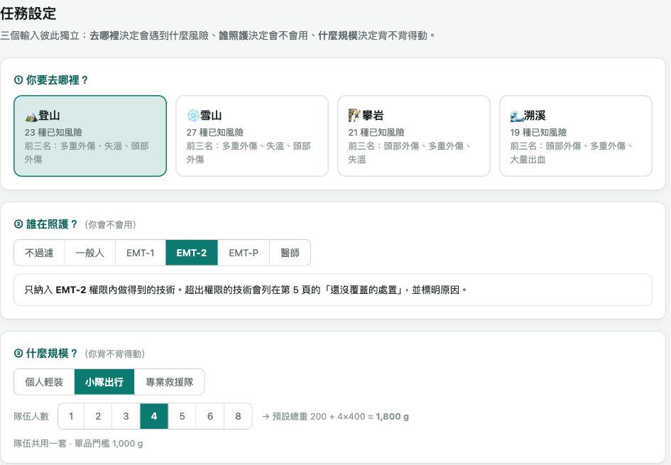
輸出 在重量限制下，挑出「攜帶價值」最高的那一組裝備，並說明為什麼
36
工具只問三個獨立的問題：去哪裡（決定風險）、誰在照護（決定能做什麼）、幾個人什麼任務（決定背得動多少），再挑出攜帶價值最高的一組裝備。
架構
把「該帶什麼」拆成五個可回答的問題
03
問 1
這個情境會遇到哪些醫療狀況？
登山 25 種求救的原因，來自學術期刊/文獻與政府統計來源
問 2
這些狀況的風險有多高？
考量 發生率 ＆ 致命性
問 3
這些狀況需要哪些臨床技術？
187 個技術，各自標明執行權限與野外可行性
問 4
這些技術需要哪些設備？
Best／Better／Basic 三層，商品化設備到徒手即造
問 5
在重量上限內，哪些風險值得優先覆蓋？
依 Severity Score ÷ 重量排序求解
把「該帶什麼」拆成五個有順序的問題：會遇到什麼狀況、風險多高、需要哪些技術、需要哪些設備、重量上限內先覆蓋哪些風險。
AI × EMS
決策鏈：任務 → 風險 → 技術 → 裝備 → 優化器
任務
4
活動 × 證照 × 人數
使用者輸入
風險
29
盛行率與致死率
Deep Research
技術
115
要做哪些處置
Book-to-Skill＋法規
裝備
153
型號與重量
網路爬蟲 Crawl
優化器
1
高風險 ÷ 重量
AI 寫程式
AI 做初稿，人來拍板：每一次調整都寫成一筆決策紀錄，由程式套用、重跑 8 組回歸測試
38
整個專案是一條決策鏈：任務 → 風險 → 技術 → 裝備 → 優化器。每一步都用了 AI 工具，但 AI 做初稿、人來拍板，每次修改都留下決策紀錄並重跑測試。
Deep Research Skill
為 Claude Code 打造的企業級深度研究引擎
Claude Code Skill
核心功能
量化效益
8 階段研究管線
Scope→Plan→Retrieve→Triangulate→Outline→Synthesize→Critique→Package，自動化企業級研究流程
多來源搜尋整合
Brave、Serper、Exa、Jina、Firecrawl 五大搜尋引擎，並行處理 5–10 組並發搜尋
嚴格引用查證
9 項驗證標準自動核實，杜絕幻覺與無根據論述，確保每個論點有據可查
專業報告輸出
Markdown / HTML / PDF，麥肯錫風格排版，適合直接呈報決策層
4 種模式
Quick (2-5min)
Standard (5-10min)
Deep (10-20min)
UltraDeep (20-45min)
10+ 來源
每項關鍵論點需 3+ 來源交叉驗證
同時搜尋5–10資料庫
並行搜尋同時執行，加速證據蒐集
18,000+
字報告自動接續生成，突破長度限制
使用方式：在 Claude Code 輸入「deep research on [主題]」，可加註 ultradeep mode 等模式調整深度。
GitHub: 199-biotechnologies/claude-deep-research-skill
Deep Research Skill 是給 Claude Code 用的深度研究工具：多個搜尋引擎並行搜尋、逐項查證引用。這個專案用它找各種傷病的盛行率與致死率。
疾病風險的每一個數字都有文獻引用，可以回頭查證。
Severity ＝ 盛行率 ＋ 致死率 × 2。致死率加倍，讓雷擊、高海拔肺水腫這類罕見但致命的狀況不會被常見小傷淹沒。登山前三名是多重外傷、失溫、頭部外傷。
AI × EMS
技術：Book-to-Skill 把教科書變成 AI 的專科知識
42
把書籍與文件轉換成可即時查詢的 Agent Skill
核心功能
量化效益
多格式書籍解析
PDF、EPUB、DOCX、HTML、RTF、MOBI/AZW 皆支援，自動判斷文字型或技術型內容並選擇最佳解析法
雙階段生成流程
擷取階段（Python 腳本清理文字與結構）→ 生成階段（Agent 驅動），產出 SKILL.md 與章節檔案
按需載入架構
章節檔案平常不載入，查詢時才讀取，避免整本塞進 context 造成幻覺與浪費
多元應用場景
技術手冊、內部文件、設計規範、研究論文集、標準規格，皆可轉換為可查詢技能
24–51x
相較整本塞入 context，大幅減少回答問題所需的 token 用量
~4,000
SKILL.md 主索引 token 數，內含心智模型與章節索引，一次載入
~1,000
每個章節檔案的 token 數，查詢時才按需載入
7+ 格式
PDF / EPUB / DOCX / HTML / RTF / MOBI / AZW / 純文字皆支援
用 Book-to-Skill 把野外醫學教科書、ATLS、ACLS、延長照護 PCC 變成 AI 可以查的專科知識，從傷病推到臨床目標再推到技術。
AI × EMS
技術：Book-to-Skill 把教科書變成 AI 的專科知識
餵進去的書
Wilderness Medicine 7e
ATLS 11th
ACLS 2025
PCC 延長照護
29 傷病
例：大量出血
55 臨床目標
例：控制外出血
115 技術
例：直接加壓、填塞、止血帶
全鏈覆核：28 種傷病 × 169 條連線送審
出血性（龜殼花、百步蛇、赤尾青竹絲）
抬高到心臟高度；不冰敷、不加壓、不綁止血帶
神經性（雨傘節、眼鏡蛇）
立即加壓固定、制動
做法 書變成 AI 隨時可查的技能；它列出每個傷病要做的處置，也回頭檢查舊資料
Forgey WW. Wilderness Medicine: Beyond First Aid, 7th ed., Ch5（蛇咬傷）；覆核紀錄 docs/decisions/0009（2026-08-24）
43
AI 拿教科書回頭覆核整條鏈，抓到舊版把所有蛇咬傷混在一起：出血性與神經性蛇咬的處置相反，後來拆成兩種傷病。
把救護技術員管理辦法交給 AI，替 115 項技術標上最低執行等級，再由我覆核：一般人可做 79 項，醫師才能做 20 項。選了證照等級，優化器就只放做得到的東西。
Claude Code + Firecrawl
讓 Claude Code 具備即時網頁擷取與爬蟲能力
MCP Integration
核心功能
量化效益
全站爬取與網域地圖
Crawl 自動遍歷整個網站，Map 快速探索網域所有可用網址，適合大規模資料蒐集
單頁擷取為乾淨格式
Scrape 把雜亂 HTML 轉成乾淨 Markdown / JSON，可指定 Schema 做結構化擷取，減少雜訊
整合搜尋與自主研究
Search 一次完成網頁搜尋與內容擷取，Agent 模式可跨多個來源自主研究並回傳結構化結果
動態網頁互動能力
支援 JavaScript 渲染、代理輪替，以及點擊、捲動、輸入等操作，處理需要互動的動態頁面
省 80%
相較直接餵入原始 HTML，大幅降低 token 成本
快 50x
實測效能較部分同類爬蟲工具（如 Apify）大幅提升
125 萬+
開發者使用，15 萬+ 企業信賴，含 Shopify、DoorDash、Zapier
6 大工具
Scrape / Search / Crawl / Map / Extract / Agent，整合進開發工作流
使用方式：於 Claude Code 安裝 Firecrawl MCP（npx firecrawl-mcp 或官方外掛），設定 FIRECRAWL_API_KEY 即可使用。 參考：firecrawl.dev/integrations/claude-code
Claude Code 加上 Firecrawl，就能即時擷取網頁、爬整個網站，並把內容整理成乾淨的資料。這個專案用它自動抓裝備的型號、重量與價格。
同一項處置有三種取得方式：Best 專用器材、Better 用醫療用品即造、Basic 用生存物資即造。背得動就用 Best，背不動就退一層。
AI × EMS
優化器：每一克都要換到最多的風險覆蓋
價值分數 Value Score
＝ 新增覆蓋的 Severity 總分 ÷ 新增重量
1
排除做不到的：超出證照、野外不可行
2
大出血（M）先裝
3
先求覆蓋：每項處置先用最省重量的做法
4
剩下的重量再升級到 Best（大出血優先）
發現 重量變 3 倍，覆蓋率只多約 14 個百分點：便宜又有效的東西，第一輪就裝進去了
覆蓋率＝已覆蓋的「傷病 × 技術」單位 ÷ 全部單位；兩階段貪婪演算法（先求覆蓋、再升級），同分依固定順序排列，結果可重現
47
優化器的價值分數 ＝ 新增覆蓋的風險分數 ÷ 增加的重量。先求每項處置都有人能處理，再用剩下的重量升級；單人 600 g 約覆蓋 77%，4 人 1,800 g 約 91%。
情境一：一般人單人登山，上限 600 g。挑了 23 件、586 g，覆蓋一般人可做處置的 97%；止血用品升級到最好的一層，保暖用 20 g 的垃圾袋。
AI × EMS
情境二：EMT-2，4 人小隊，上限 1,400 g
1,370 g
總重（上限 1,400 g）
32 件
件計重裝備
88%
EMT-2 可做的處置（244／276）
帶了什麼
止血
呼吸
評估
固定
其他
沒裝進去的，和原因
•IV＋輸液整套 215 g、Pocket BVM 450 g：有證照，但重量排不進去
•三角巾、彈繃、碘酒、冰袋：重量用完
•氧氣瓶 2,045 g、AED 2,000 g：單件超過 1,000 g 上限
•需要 EMT-P 或醫師的處置：不放
49
交界處止血帶 482 g
止血帶
Combat Gauze
壓縮紗布
口袋面罩
口咽呼吸道
抽吸組
異物夾
通氣胸封
血氧機
體溫計
血糖機
瞳孔筆
頸圈
保暖毯
戰術剪
Epinephrine 自動注射筆
情境二：EMT-2 四人小隊，上限 1,400 g。挑了 32 件、1,370 g，多了交界處止血帶與呼吸道器材；IV 沒帶，因為要連輸液一起算，換到的覆蓋不划算。
情境三：EMT-P 專業搜救隊，不限重量。69 件、23.1 kg 全覆蓋，但最重的 6 件就占 84%，問題從「帶什麼」變成「誰來揹」。
三組比較：一般人受限於證照，EMT-2 受限於重量，EMT-P 受限於人力。共同點是都先裝止血；會做不等於背得動；每一件帶與不帶都說得出理由。
AI × EMS
優化器之後：沒帶到的處置，一項一項列出來
52
以情境二為例：340 個處置中，73 個沒帶到
超出執行權限
40
需 EMT-P 12、需醫師 28
重量用完
5
聲門上氣道（Pocket BVM 450 g）
野外不可行
14
氣管插管、環甲膜切開…
單件超過上限
9
氧氣瓶、AED
三層都沒方案
5
輸血、ECMO、胸管
清單最上方：分數最高的缺口
7 分
多重外傷 · 聲門上氣道
重量不足：Pocket BVM 450 g
7 分
多重外傷 · 針刺減壓
超出權限：需 EMT-P
7 分
頭部外傷 · 氣管插管
野外不可行
6 分
心血管急症 · 去顫電擊
單件超重：AED 2,000 g
用途 知道缺什麼，隊伍才能事先補位：多分一點重量、找支援、或改行程
工具第 5 頁「Remaining Risk Gaps」：依分數由高到低列出，每一項都標明沒帶的原因與卡住的裝備
優化器也會列出沒帶到的處置與原因，最危險的缺口排最上面。隊長出發前就知道缺什麼，可以多分重量、找 EMT-P 同行，或調整行程。
AI 負責找文獻、讀教科書、抓規格，以及資料庫、優化器和網頁的程式；人負責臨床判斷、給分和每一次覆核拍板。掃 QR Code 可以直接試用醫療包工具。
系統目前的限制：文獻多為需要救援的案例，可能低估輕傷；攀岩與溯溪沒有台灣本土文獻；成本只考慮重量。這是建議，不是處方。
AI × EMS
野外救援品質資料庫：先看全世界在記什麼
台灣山域救援的問題
•各單位各記各的，欄位不同
•連「死亡」的定義都不一致
•無法跨單位比較，也做不了品管
4 個資料庫
PubMed、Crossref、OpenAlex、Europe PMC
47 篇候選
兩輪搜尋，第二輪專補缺口
26 篇全文深讀
逐表格抽出收集了哪些欄位
282 個原始欄位
各國研究實際記錄的變項
121 個標準化變項
語意相同者合併成一本字典
AI 的角色 搜文獻、抓全文、逐表格抽變項；工作量相當於一篇小型系統性回顧
2026-08-24 起；只用有公開 API 的資料庫（Google Scholar、Scopus、WoS 無公開 API 未納入）
55
台灣山域救援各單位各記各的，連死亡定義都不一致，無法跨單位比較。先請 AI 從 26 篇全文整理出 282 個欄位，合併成 121 個標準化變項。
AI × EMS
資料庫架構：一次任務，就是一本病歷夾
題目共 71 題（必填 33、建議填 13、選填 6、新增輔助 19）；選項另參考新竹市消防局救護紀錄表。資料庫先以 SQLite 建置，可轉到任何平台
56
任務表 38 題・每次出勤一筆
受理派遣 → 同行者 → 搜索與地點 → 救助 → 任務結束
例：報案時間、活動類型、尋獲狀態
1 對多 ▼
傷患表 32 題・每位當事人一筆
基本資料 → 醫療評估 → 現場處置 → 後送 → 結局
例：事故機轉、GCS、是否死亡
1 對多 ▼
救援人員傷害表 1 題・有人受傷才填
每位受傷或發病的救援人員一筆
例：傷害嚴重度
56
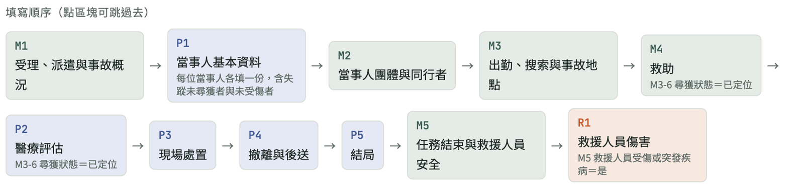
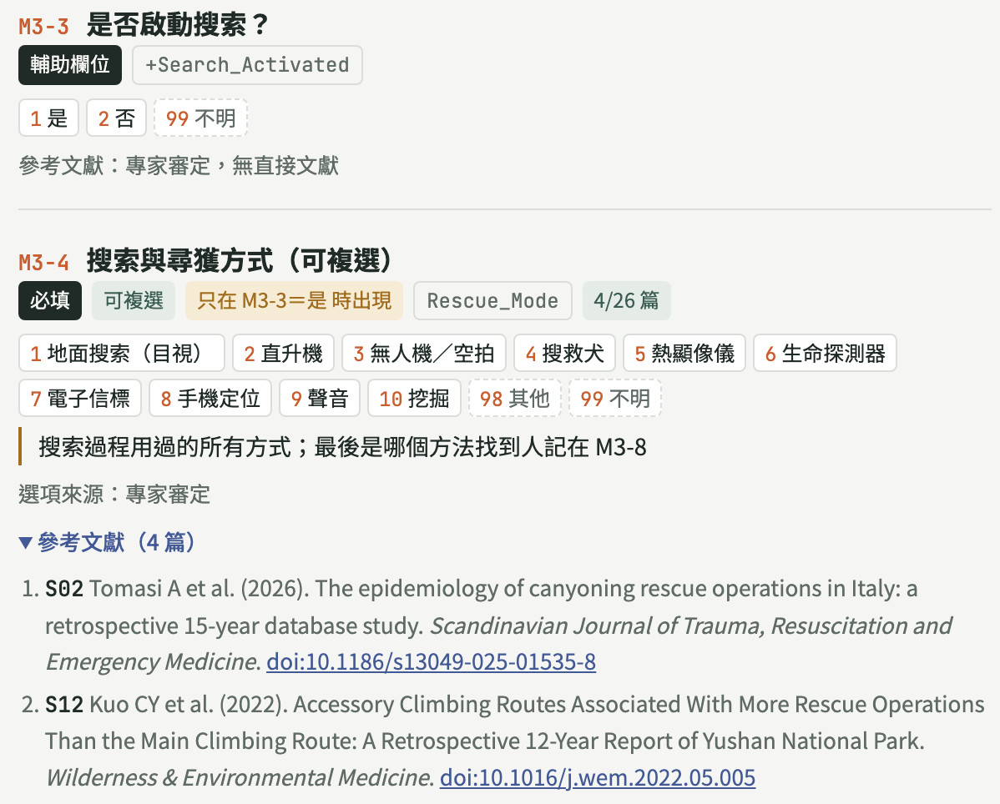
一次任務就像一本病歷夾：任務表、傷患表、救援人員傷害表。題目照救援流程排並自動跳題，時間只填時間點、時效由系統計算，選項統一代碼。
AI × EMS
用途：填一份問卷，自動長出品質儀表板
第一線問卷
71 題・11 區塊・自動跳題
→
資料庫
任務／傷患／救援人員傷害 3 張表
→
監測儀表板
33 個指標自動計算
救援時效
報案到接觸傷患要多久
救援人員安全
志工受傷率是專職 3.6 倍
國際對標
ICAR 品質指標、Utstein
57
第一線填一份 71 題的問卷，系統自動算出 33 個品質指標，回答救援時效、救援人員安全與國際對標三類問題。畫面為模擬資料。
AI × EMS
人機分工：AI 做苦工，每一關由人拍板
AI 負責
•搜尋與篩選文獻、抓全文
•整理表格、建議哪些欄位可合併
•依審核意見改出下一版
人負責
•Fall 與 Fall from height 要不要合併
•哪些變項列為必填、台灣做不做得到
•問卷順序、跳題與選項定案
8/24
開工
10/9
核心變項定稿
10/11
轉做第一線問卷
10/19
第 14 版定案
人才看得出來 「存活」收集率 100%，卻有 45.8% 中心定義不同 → 台灣版要明訂死亡時間窗
Ringdal KG, et al. Crit Care 2011（Utstein 創傷核心資料多中心研究）。審核頁：網頁上勾選＋備註，AI 讀回後改版
58
AI 負責搜文獻、抓全文、整理表格；每一關由人拍板，例如哪些變項要必填、死亡要用哪個時間窗。審核頁上按保留、刪除、待討論，AI 讀回後改出下一版。
TECC 教民眾先分區：熱區 Run、Hide、Fight；暖區只做止血等救命處置並撤離；冷區做完整 MARCH 評估、通報 119。網頁依加害者位置與視線，即時把教室塗成紅、黃、綠。
區域依視線與門禁即時計算：門全開時視線沿走廊一路到底，多間教室變熱區；關門後退回暖區。學生視野模式只看得到眼前範圍。
闖關任務：拖曳「我」躲開視線、隨手關門，找到傷患後背到警察安全區；也可以帶兩位警察進行戰術救援。整個網頁的程式都是 AI 寫的。
AI × EMS
AI 應用小訣竅：AI 自己的建議
有問題，直接問 AI
先講你的背景；聽不懂就說「再白話一點」；錯誤訊息整段貼上
開精確的規格書
寫目的，不寫做法；一定要寫「怎樣算完成」
不確定，先規劃再動手
只講困擾、請 AI 列方案、先做粗版；Plan Mode 只討論不改檔
固定流程存起來
做過兩三次的事，做成 Skill 或程式，不用每次從頭教
AI 做苦工，人來拍板
AI 錯的時候看起來跟對的一樣：抽查、核對原文、先備份
AI 的弱點 會很有自信地講錯，也容易順著你；問「有什麼問題？」比問「對吧？」好
62
這幾頁請 AI 用它自己的角度，整理五個使用訣竅。它也承認自己的弱點：會很有自信地講錯、容易順著你，所以要問「有什麼問題？」而不是「對吧？」。
AI × EMS
規格書：交給 AI 的交班單
規格書六問 | 例子：CPR 輔助 App |
給誰用、在哪裡用？ | EMT 在救護車上，戴手套用手機 |
要解決什麼困擾？ | 現場找不到給藥時間紀錄 |
一定要做到 | 單手可操作、離線也能用 |
有更好 | 可以匯出 PDF |
不能做 | 不存病人姓名、不上雲端 |
怎樣算完成？ | 跑一次模擬 OHCA，全程不用看說明 |
三個寫法訣竅
寫目的，不寫做法
「3 秒內找得到」比「按鈕放左上角」好
紅線先講
隱私、資安、院內規定，事後改很痛苦
附參考圖
一張截圖勝過十句形容詞
最重要 沒寫「怎樣算完成」，AI 不知道什麼時候該停：可能做太多，也可能做太少
63
規格書就是交給 AI 的交班單，回答六個問題：給誰用、解決什麼困擾、一定要做到、有更好、不能做、怎樣算完成。最重要的是最後一項。
AI × EMS
有問題，直接問 AI：它會教你
怎麼問最有效
先講你的背景
「我是急診醫師，不會寫程式」，它就改用白話、舉臨床例子
聽不懂就一直追問
「再白話一點」「用救護車上的例子講」，問十次也不會不耐煩
整段貼上，不要先過濾
錯誤訊息、截圖、Excel 前幾列，你覺得不重要的常是答案
連「該問什麼」都能問
「我想做 ○○，應該先搞懂哪些事？」它會列學習清單
AI 的弱點，你一定要知道
會很有自信地講錯
醫學內容、數字請它附來源，重要的自己查原文
容易順著你的話
別問「這樣對吧？」，改問「這樣有什麼問題？」
知識有截止日期
最新指引、軟體版本，叫它上網查
試試看 「我是急診醫師，不會寫程式，想把每月報表自動化，該從哪裡開始？」
64
先講你的背景、聽不懂就追問、錯誤訊息整段貼上、連該問什麼都可以問。也要知道它的弱點：會講錯、會順著你、知識有截止日期。
AI × EMS
還不確定？先規劃，再動手
只講困擾
「聽眾都找不到我介紹的工具」，做法一起想
請 AI 列方案
列 2–3 個做法、優缺點，給推薦，你來選
請 AI 訪問你
「我還沒想清楚，你問我問題」，問完規格書就成形
先做粗糙版
看到東西才知道對不對，改比空想快
建議順序 只講困擾 → 請 AI 訪問你 → 先做粗糙版，通常兩三輪規格就清楚了
Plan Mode Claude Code 按 Shift + Tab 切換：只研究、只提計畫，不改任何檔案
為什麼 AI 做事很快，做錯也很快：先花 5 分鐘對方向，省下 1 小時重做
65
還沒想清楚也可以找 AI：只講困擾、請它列方案、請它訪問你、先做粗糙版。Claude Code 的 Plan Mode 只討論、不改檔案。AI 做事很快，做錯也很快。
AI × EMS
固定流程存起來：Skill 還是程式？
| Skill | 程式（script） |
比喻 | SOP 卡，交給 AI 照著做 | AED，按下去就跑 |
需要 AI 嗎？ | 需要，AI 照步驟執行 | 不需要，電腦自己跑 |
遇到例外 | 可以判斷、變通 | 不會變通，停下來報錯 |
結果 | 大致一致 | 每次完全一樣 |
適合 | 要判斷的事：整理文章、寫摘要 | 規則固定的事：合併表格、轉檔、算數字 |
怎麼做 做完一次滿意的流程，直接說「把剛剛的流程做成 Skill」或「寫成程式，以後我自己跑」
原則 能用程式就用程式：更快、更省、每次一樣；病人資料交給本機程式處理，不送給 AI
例：每月 OHCA 品管報表，從 12 小時變成打一個指令跑完
66
固定的流程要存起來：需要判斷的事做成 Skill，規則固定的事寫成程式。能用程式就用程式，病人資料交給本機程式處理，不送給 AI。
AI × EMS
AI 做苦工，人來拍板：審核頁
野外救援品質資料庫：新增 9 篇文獻的變項審核頁（AI 產生，網頁上直接勾選）
AI 做
讀 9 篇全文、萃取 135 個變項、附原文出處、做成審核頁
人拍板
每一項按分級或不收、寫備註；AI 讀回結果才改資料庫
驗收守則
數字抽查、文獻核對原文、改檔前先備份
原則 AI 錯的時候看起來跟對的一樣：重要產出一定驗收，臨床判斷不外包
67
AI 讀完 9 篇全文、萃取 135 個變項並附出處，做成審核頁；人逐項決定分級或不收。AI 錯的時候看起來跟對的一樣，重要產出一定要驗收。
第三部分
AI 落地的兩個困境
從「我一個人好用」到「大家能安心用」
困境一
工具散落在個人身上
每個人各寫各的，版本多、沒人維護
困境二
資訊安全的界線
哪些資料能給 AI？AI 和程式差在哪？
從「我一個人好用」到「大家能安心用」，有兩道關卡：工具散落在個人身上，以及資訊安全的界線。
AI × EMS
困境一：好用的工具，都長在個人身上
現況：個人優化的小工具
品管報表
常訓系統
CPR 工具
音效台
演練系統
教學網頁
每個人各寫一套、各存一處、只有作者會修
四個風險
1
人走系統就停
只有寫的人知道怎麼修
2
版本分歧
同一件事各寫一套，數字對不起來
3
沒人驗證
沒有測試、沒有紀錄，錯了也沒人知道
4
資料散落
病人資料存在各人的電腦和腳本裡
瓶頸不只是工程，而是治理：誰負責、誰維護、誰有權限碰資料
第二部分的教訓：系統做好了沒人用，韓國使用率 29%／12%；荷蘭 App 實際上傳僅 978 例
69
個人小工具的風險：人走系統就停、版本分歧、沒人驗證、資料散落。要突破需要資訊室介入，但瓶頸不只是工程，而是治理：誰負責、誰維護、誰能碰資料。
AI × EMS
困境二：資訊安全的界線
院內電腦（資料不離開醫院）
病人資料
程式
統計結果
程式照規則執行，不會自己把資料送出去
雲端 AI 只看得到
欄位結構、假資料、統計結果
注意：這三個時刻，資料會不小心進到 AI
叫 AI「跑跑看」
它會讀到印出的結果
叫 AI 看檔案或畫面
整個檔案、HIS 截圖都上傳
70
程式出錯
錯誤訊息夾帶那一列資料
AI 和程式不同：程式照規則執行、不上傳資料；AI 要思考就必須上傳。病人資料、程式、統計結果留在院內，雲端 AI 只看欄位結構、假資料和統計結果。
AI × EMS
困境二：資訊安全的界線
71
要小心「什麼東西進了 AI 的對話」：程式輸出、錯誤訊息、截圖都可能夾帶病人資料。去識別化也不只是拿掉姓名，自由文字、精確日期、罕見個案都可能被認出。
AI × EMS
資料分級：什麼資料，用什麼工具
等級
例子
可以用的工具
公開資料
文獻、指引、公開統計
雲端 AI 隨意用
彙總結果
每月 OHCA 存活率、品管指標
雲端 AI 可用；先確認沒有小樣本可被認出
去識別個案
拿掉身分、保留病程的紀錄
醫院核准的系統；沒核准時用本地 AI
可識別資料
病歷號、姓名、病歷全文、HIS 畫面、119 錄音
只能用院內系統或核准的本地 AI，
程式在院內執行
原則：這類資料，只能用醫院核准、適合這個等級的系統。醫院還沒核准前，可識別資料「只用本地」是最安全的預設
本地 AI 也不是自動安全：個人筆電要加密、有存取紀錄；本地模型較弱，幻覺可能更多
72
用資料分級決定工具：公開資料用雲端 AI；彙總結果先確認沒有小樣本；去識別個案用醫院核准系統或本地 AI；可識別資料只能用院內系統或核准的本地 AI。
AI × EMS
落地路徑：分階段，不是一次跳到全院
1
個人原型
快速做、快速改，證明有用
自己
2
整理成可交接
放進 git、寫說明，病人資料不進程式庫
自己＋AI
3
小組試用
2–3 人一起用，指定臨床負責人與權限
科內
4
院內化
用數據提案，資訊室負責權限、資安、維運
資訊室＋臨床
關鍵：只挑 1–2 個已證明有效的工具往上推，例如品管、教育訓練系統
法規已在推
人工智慧基本法 §19：政府用 AI 要做風險評估；衛福部生成式 AI 指引：分階段、可回復、持續監測
119 也一樣
縣市各自做跑得快、全國標案標準化；錄音存哪裡、廠商能否拿來訓練，要寫進採購規格
73
分四階段落地：個人原型 → 整理成可交接 → 小組試用 → 院內化。只挑一兩個已證明有效的工具往上推，例如品管從 12 小時降到 2 小時。
AI × EMS
今天帶回去的三件事
1
從你最煩的那件事開始實作
不會寫程式也能動手：品管 12 小時縮到 2 小時，App 一兩個晚上做出成品
2
AI 做苦工，人來拍板
找文獻、寫程式、整理資料交給 AI；臨床判斷、給分、定案留給人
3
落地靠治理，不只靠技術
資料先分級、可識別資料不上雲；挑 1–2 個有效工具分階段推
AI 是加速器，方向盤還是在醫療指導醫師手上
謝謝聆聽
三件事：從你最煩的那件事開始實作；AI 做苦工，人來拍板；落地靠治理，不只靠技術。AI 是加速器，方向盤還是在醫療指導醫師手上。